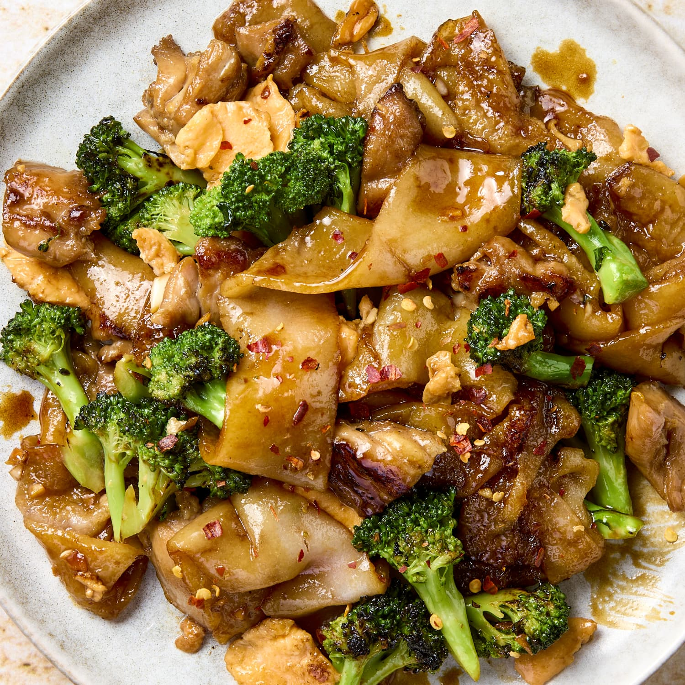

Home
Pad See Ew

Description
A savory Thai street food favorite with rich, smoky flavor. Our Pad See Ew features wide rice noodles stir-fried with tender chicken, Chinese broccoli, and scrambled eggs in a bold soy-based sauce. It’s comforting, slightly sweet, and packed with umami—perfect for a quick and delicious meal at home.
Ingredients
- 8 oz wide rice noodles
- 1 cup sliced chicken breast
- 1 cup Chinese broccoli (or regular broccoli)
- 2 eggs, beaten
- 2 tablespoons dark soy sauce
- 2 tablespoons light soy sauce
- 2 tablespoons vegetable oil
- 2 cloves garlic, minced
- White pepper to taste
Instructions
- Soak wide rice noodles in warm water until softened, then drain and set aside.
- Heat vegetable oil in a large skillet or wok over medium-high heat.
- Add garlic and sauté until fragrant.
- Add sliced chicken and cook until browned and cooked through.
- Push the chicken to one side of the skillet and pour in the beaten eggs. Scramble until fully cooked.
- Add Chinese broccoli, noodles, both soy sauces, and white pepper. Stir-fry until everything is well combined and noodles are slightly charred.
- Serve hot and enjoy immediately.